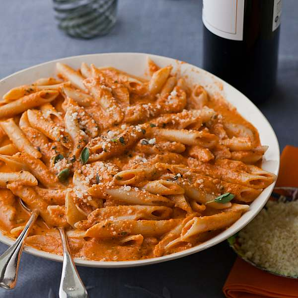

Penne alla Vodka

Penne pasta coated in a deliciously savoury tomato and cream sauce
Ingredients
- 3 cups of prepared marinara sauce
- 1 tablespoon of olive oil
- 1/2 cup of vodka
- 1/2 cup of heavy cream
- 4 ounces of pancetta, diced
- 1 package of penne pasta
Steps
- Saute pancetta in olive oil in large saucepan until fat has rendered off, then remove from pan
- Add vodka to pan and allow it to reduce down to about 2 tablespoons
- Pour heavy cream and bring to a boil, then reduce heat to medium. Add the marinara sauce
- Mix and lower heat, simmer for 20-25 minutes
- Add penne pasta to pot of boiling water, cook to instructions on packaging. Once cooked, add to skillet of sauce and serve